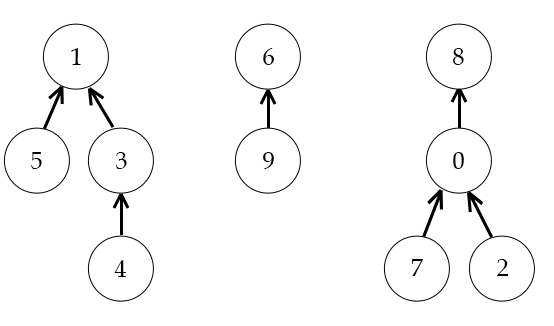

Kruskal algoritmusa egy mohó algoritmus, tehát az adott pillanatban
legjobbnak
látszó élt részesíti előnyben. A gráf éleit súlyuk szerint monoton növekvő sorrendben veszi sorba.
A
kört képző éleket eldobja. A többit hozzáveszi $A$-hoz. Kruskal algoritmusának invariánsa:
- A $G = (V, E)$ összefüggő, irányítatlan, élsúlyozott gráf feszítő erdeje $(V,
A)$,
és $A$ részhalmaza a $G$ valamelyik minimális feszítőfája élhalmazának.
Az algoritmus ellenőrzi, hogy a gráf összefüggő-e. Ha összefüggő, $k = 1$
értékkel tér vissza. Ha nem, $k > 1$ értékkel tér vissza.
Működése:
Kruskal algoritmusában az $(V,A)$ egy erdő. Kezdetben az erdőben minden
egyes
csúcs egy komponens (fa), ezt a $makeSet(v)$ függvény végzi. Az éleket monoton növekvő sorrendben
vesszük sorba. Ehhez egy minimum prioritásos sort használunk.
Az algoritmus kiveszi a minimum prioritású sorból a legkisebb súlyú élt. Ha ez
az
erdő két tetszőleges komponensét összekötő legkisebb súlyú él, akkor ezt hozzávesszük az
$A$
élhalmazhoz, és ezzel együtt összevonjuk a két komponenst a $union(x, y)$ függvény
segítségével.
Ha
nem két különböző komponenst köt össze, akkor eldobjuk az élt, mivel kör keletkezne. $|G.V |−1$
bővítés
után éppen a $G$ egyik minimális feszítőfáját kapjuk meg. Az invariáns igaz marad végig, mivel két
különböző komponenst köt össze az él és
a
legkisebb súlyú, így biztonságos.

Kruskal algoritmus halmazműveletei:
A $makeSet(v)$ beállítja mindegyik komponens (fa) gyökerének önmagát és a fa
méretét
beállítja $1$-re. Mindegyik csúcsból egy egyelemű irányított fát képez.
| $\pi (v) := v$ |
| $s(v) := 1$ |
A $findSet(v)$ megkeresi a csúcsot tartalmaző irányított fa gyökércsúcsát.
Keresés
közben a $v$ csúcs minden ősének beállítja a gyökércsúcsot ezzel növeli a hatékonyságot, mivel a
legközelebbi keresésnél $1$ lépéssel megkaphatjuk a gyökércsúcsot.
$\pi (v) \neq v$
|
| $\pi (v) := findSet(\pi (v))$ |
$\text{SKIP}$ |
| $\text{return} \space \pi (v)$ |
A $union(x, y)$ az irányított fák gyökércsúcsait köti össze. A kisebb méretű
irányított fát a nagyobb vagy vele egyenlő méretű irányított fa gyökere alá köti.
$s(x) < s(y)$
|
| $\pi (x) := y$ |
$\pi (y) := x$ |
| $s(y) += s(x)$ |
$s(x) += s(y)$ |
Műveletigény:
Kruskal algoritmusának futási ideje a $Q$ prioritásos sor megvalósításától függ.
Most kupaccal valósítjuk meg.
- $findset(v)$ műveletigénye: $O(log \space n)$
- $makeSet(v)$ és a $union(x, y)$ műveletigénye: $\Theta(1)$
- $n = |G.V|$ (csúcsok száma), $m = |G.E|$ (élek száma)
- $T(n, m) \in O(m \cdot log \space n)$
Gyakorlati alkalmazása:
Városok közötti utak tervezésénél, elektromos hálózatok tervezésénél,
számítógépes
hálózatoknál használják.